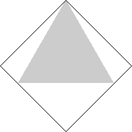
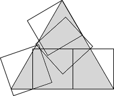
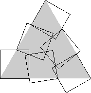
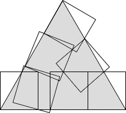
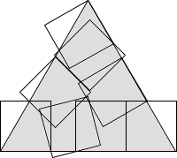
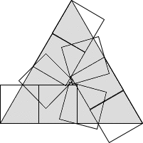
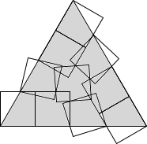
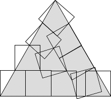
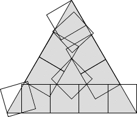

Trivial.
Found by Maurizio Morandi
in March 2009.
Found by David Cantrell
in August 2002.
| 1.  | 2.
| 3.
| ||
| s = √6 - √2 = 1.035+ Trivial. | s = 1.322+ Found by Maurizio Morandi in March 2009. | s = 2.108+ Found by David Cantrell in August 2002. |
4. 
| 5.  | 6.  | ||
| s = 4/√3 = 2.309+ Found by David Cantrell in August 2002. | s = 2.534+ Found by Maurizio Morandi in April 2009. | s = 3.168+ Found by David Cantrell in August 2002. |
| 7.  | 8.  | 9.  | ||
| s = 3.327+ Found by Maurizio Morandi in May 2009. | s = 3.495+ Found by Maurizio Morandi in April 2009. | s = 3.711+ Found by Maurizio Morandi in May 2009. |
| 10.  | 11.  | 12.  | ||
| s = 4.197+ Found by Maurizio Morandi in April 2009. | s = 4.351+ Found by Maurizio Morandi in May 2009. | s = 2√3 + √6 - √2 = 4.499+ Found by Maurizio Morandi in May 2009. |